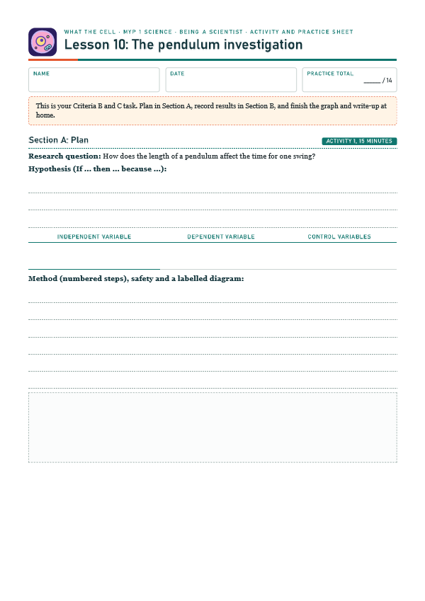

By the end of the lesson you can
- Plan a fair test into pendulum length and swing time
- Write a hypothesis, variables and a method
- Collect repeated results in a results table
- Process and evaluate the results (homework)
Keys: arrows or a presentation clicker move the slides, F for full screen. Slides with a red dot have a video or simulation.
Videos (all 5 minutes or less)
- 3:38
Simple Pendulum, science experiment
Science Projects. While you watch: How is the pendulum set up? Slide 9.
Simulations
- Lab
- PhET
Print and practise

Activity and practice sheet
Used in the lesson’s activities, with practice questions. Your teacher has the answers.
Download (PDF)Lesson 10 slides
All 15 slides in one file, to read again or print. The video buttons on the slides open YouTube.
Download the slides (PDF)Revising? The Revision tab on the unit page has the unit notes and review.
Class activity pack
Everything to print for the lesson’s activities: picture cards, sorting mats, station cards with their kit lists, and the teacher’s set-up notes. Print it before class.
Download the activity pack (PDF)Notes: The pendulum investigation
pendulum
A weight hanging from a string that swings to and fro. For example: a clock pendulum.
swing
One full movement out and back again. For example: from left to right and back to left.
length
From the point where the string is held to the middle of the weight. For example: 50 cm.
stopwatch
A timer you start and stop by hand. For example: reads to 0.01 s.
reaction time
The delay before you press the stopwatch. For example: about 0.2 s.
independent
Working on your own, with little help. For example: your own plan.
Key words
| pendulum | a weight on a string that swings |
|---|---|
| swing | out and back again |
| length | clamp to the middle of the mass |
| reaction time | the delay in pressing the stopwatch |
| repeat | do the measurement again |